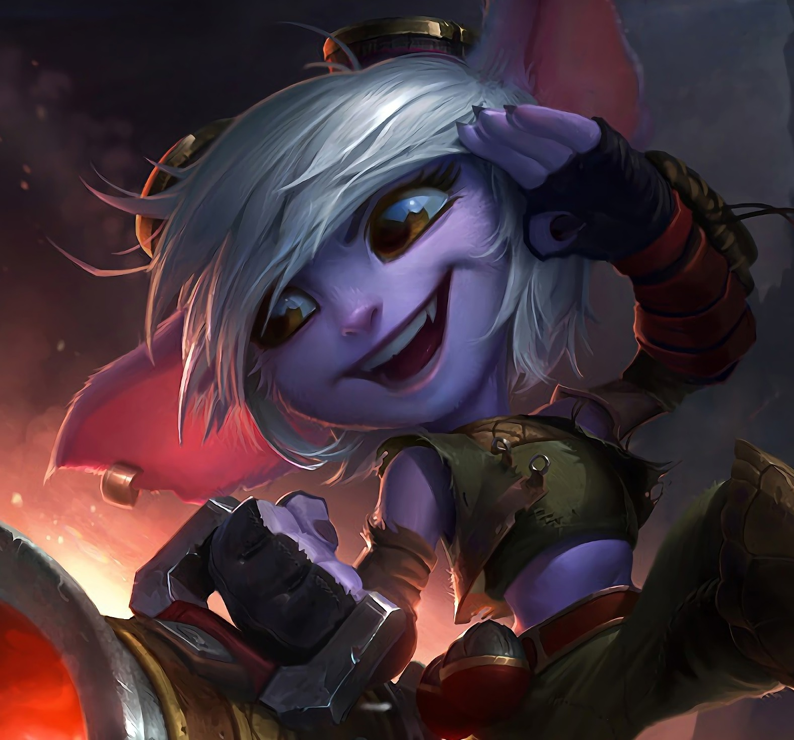

League of Legends
The Story
Regiões
Bandópolis
Bandópolis e seus habitantes carregam um poder atemporal. Isso deve explicar por que muitos mortais que encontram seu caminho de volta parecem ter envelhecido bruscamente, embora a maioria sequer retorne.
Tristna, A artilheira Yordle.
Apesar de muitos outros yordles focarem sua energia em descobertas, invenções ou simplesmente travessuras, Tristana sempre se inspirou nas aventuras de grandes guerreiros. Ela ouviu muito sobre Runeterra, suas facções e suas guerras, e acreditava que sua raça também poderia se tornar digna de lendas. Pisando no mundo pela primeira vez, ela pegou seu canhão de confiança, Boomer, e agora salta para a batalha com coragem e otimismo inabaláveis.
Riot Games
Riot Games Brasil